dBase II - die Super-Datenbank auf dem C 128
Komfort und Flexibilität - eine Datenbank wie auf einem Großcomputer! Das gibt es jetzt auch für den C 128. dBase II ist wohl das beste Datenbank-System für Personal Computer. Ein ausführlicher Bericht zeigt, was dieses Programm leistet.
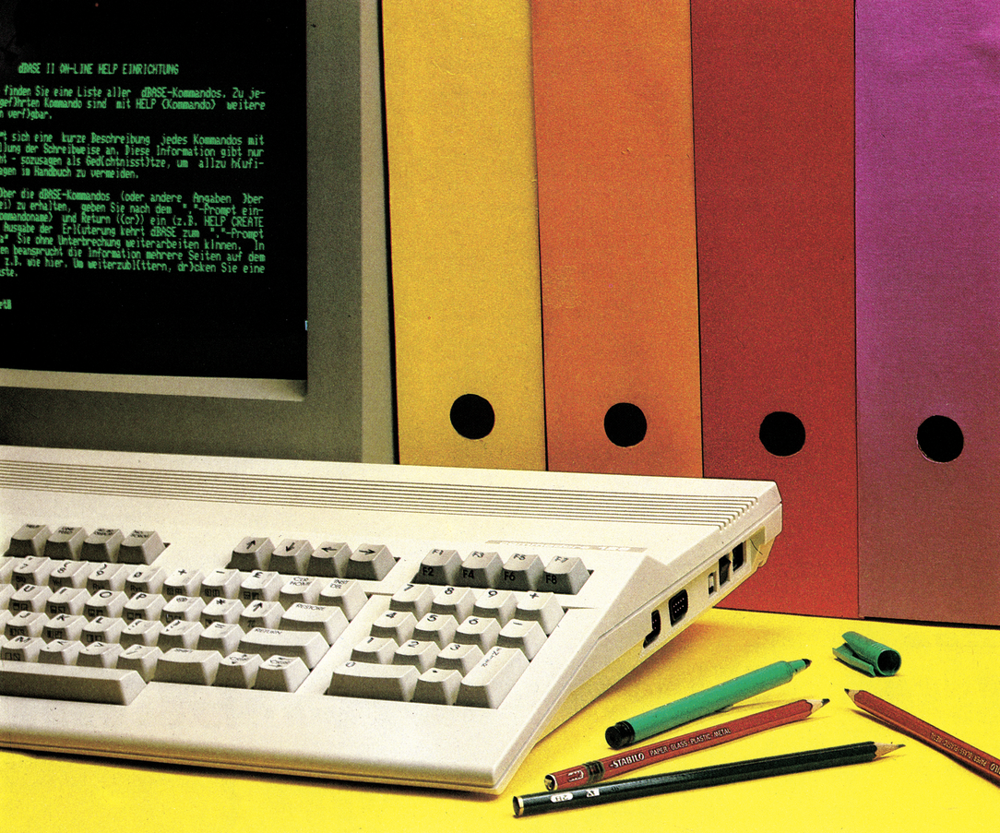
Sie glauben gar nicht, was man mit einer Datenbank alles machen kann! Vorausgesetzt, man verfügt über das richtige Werkzeug.
Beispiel: die Redaktion einer Computerzeitung.
Welche Computer und Monitore, Drucker, Diskettenstationen, Plotter, Interfaces, welche Software und welche Bücher sind wann eingegangen? Welcher Redakteur hat sie zur Zeit? Wann muß was zurückgeschickt werden? Was ist gekauft und was geliehen? Wo sind Adapter und einzelne Druckerkabel, die sehr gerne verlorengehen? Diese Fragen kann dBase II im Einsatz beantworten.
Nehmen wir das Beispiel Vereinsverwaltung. Über dBase II kann man alle Informationen über die Mitglieder verwalten, Beitragsvordrucke schreiben (das Programm weiß: Jugendliche zahlen die Hälfte vom Vater, pro Familie wird nur ein Vordruck verschickt und anderes mehr).
Beispiel Lagerverwaltung: Welche Artikel sind in welcher Stückzahl im Lager? Wieviel Teile wurden verkauft und was muß bestellt werden? Mit dBase II wird das Lager problemlos verwaltet, Bestellungen und ausstehende Rechnungen können automatisch ausgedruckt werden.
Das Datenbank-System dBase II, das dies alles leistet, ist in einer CP/M-Plus-Version nun auch für den C 128 verfügbar. dBase II ist eines der populärsten Datenbanksysteme und läuft auf 8- und 16-Bit-Mikroprozessoren. dBase II ist leicht erlernbar. Mit wenigen Befehlen kann auch ein Benutzer, der bisher mit Datenbanken und Programmieren keine Erfahrung hat, Dateien erstellen, Informationen eingeben und sie auswerten. Für Programmierer ist interessant, daß dBase II eine eigene Programmiersprache besitzt, die nicht nur sehr vielseitig ist, sondern auch praktisch. Auch kompliziertere Programme sind leicht verständlich und wegen der leistungsstarken Befehle von überraschender Kürze.
Was ist eigentlich ein Datenbanksystem?
Die Programmiersprache in diesem Datenbank-System enthält nicht nur sehr mächtige Datenbankbefehle, sondern auch alle wichtigen Elemente höherer Programmiersprachen, das sind IF-THEN-ELSE-Abfragen, DO-Schleifen, Rechenoperationen und die Verwendung von Speichervariablen. dBase II setzt aber keine Programmierkenntnisse voraus! Alle Funktionen - wie zum Beispiel das Einrichten einer Datei, die Dateieingabe, das Sortieren und Ausgeben von Daten - können auch im direkten Dialog ausgeführt werden.
dBase II ist ein relationales Datenbanksystem. Nach einer allgemeinen Erklärung der Begriffe »Datenbanksystem« und »relationales Datenbanksystem« wird in diesem Artikel anhand eines Beispiels (Videoclip-Datei) demonstriert, wie man mit dBase II arbeitet.
Mit einem Dateiverwaltungs-Programm kann ein Benutzer eine spezifische Datei verwalten, das heißt, neue Datensätze eintragen, bereits vorhandene Datensätze ändern oder löschen. Und er kann beliebig viele verschiedene Dateien mit dem Verwaltungsprogramm aufbauen. Ein Datenbanksystem kann alles dies auch. Darüber hinaus können hier aber auch mehrere Dateien miteinander verknüpft werden. Und ein ganz wesentlicher Unterschied ist die eigene Programmiersprache, über die ein Datenbanksystem verfügt.
Diese beiden Merkmale unterscheiden ein Datenbanksystem von einer einfachen Dateiverwaltung: das Verknüpfen von Dateien und die Möglichkeit zur Programmierung immer gleicher Arbeitsabläufe.
Bei der üblichen Datenorganisation in Programmen führt jedes Programm seine eigenen Dateien. Inhalte dieser Dateien können sich für unterschiedliche Programme durchaus überschneiden. Dieses mehrfache Speichern von Daten belegt unnötigen Speicherplatz. Ein weiterer Nachteil dieser Datenorganisation tritt bei aufeinander aufbauenden Programmen auf: Daten müssen an übergeordnete Programme weitergegeben werden. Dieser Aufwand ist nicht mehr nötig, wenn alle einmal gespeicherten Daten allen Programmen zugänglich gemacht werden - und dies ist genau das Prinzip eines Datenbanksystems.
In einem Datenbanksystem werden also alle Daten einmal gespeichert und mit dieser Datenbank arbeiten alle Programme (Bild 1).
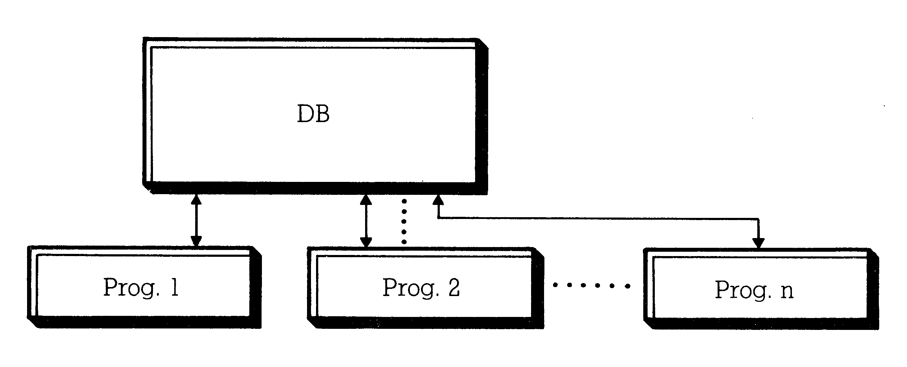
Darüber hinaus hat ein Datenbanksystem die Aufgabe, Informationen in geordneter Form zu verwalten und dem Benutzer zur Verfügung zu stellen. Praktisch alle Daten, die in einer Datenbank gespeichert werden, stehen untereinander in irgendeiner Beziehung. In einer Personaldatenbank beispielsweise steht der Name eines Mitarbeiters in Beziehung zu seinem Monatseinkommen. Andererseits ist der Mitarbeitername wieder verknüpft mit persönlichen Daten oder dem Namen der Abteilung. Dies ist ein ganz einfaches Beispiel. Die Beziehungen von Daten einer Datenbank zu anderen Daten aus weiteren Datenbanken können sehr komplex sein. Die Ordnung innerhalb einer Datenbank, die Datenbankstruktur, baut auf diesen Beziehungen auf. In einer Datenbank ist also festgelegt, wo welche Daten liegen, in welcher Form sie schon verknüpft sind oder verknüpft werden können.
Datenstruktur
Eine Datenbank besteht üblicherweise aus mehreren Dateien (Files). Eine solche Datei kann man sich vorstellen als Karteikasten, der eine Menge Karteikarten enthält. Die Karteikarten in der Datenbank nennt man Datensatz. Ebenso wie eine Karteikarte nach einem festen Schema beschrieben wird, das sich aus Einzelangaben zusammensetzt, hat jeder Datensatz ein festes Schema. Dieses Schema gibt eine feste Struktur vor, die für jeden Datensatz gleich ist. Jede Einzelangabe auf einem Datensatz wird als Feld bezeichnet.
Der Aufbau einer Datenbank nun noch einmal anschaulich:
Eine Datei (Bild 2) in der Datenbank enthält zum Beispiel ein Verzeichnis aller auf Videoband aufgezeichneten Clips. Die Angaben in der Datei können als Liste (Bild 3) ausgegeben werden.
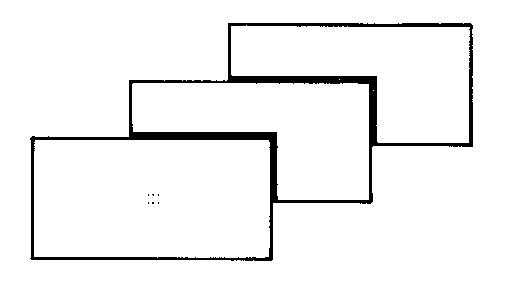
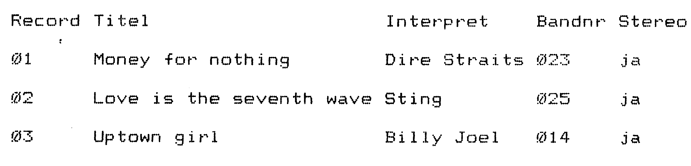
Jede Zeile entspricht einem Datensatz (Bild 4). Jeder dieser Datensätze ist nach einem festen Schema aufgebaut. Das Schema der Datensätze dieses Beispiels enthält vier Felder - »Titel«, »Interpret«, »Bandnr« und »Stereo«. Die Feldtypen - das sind die Arten der Datenfelder - sind in den Feldern »Titel« (Bild 5) und »Interpret« alphanumerische Zeichenfolgen, beim Feld »Bandnr« eine numerische oder Zahlenfolge. Das Feld »Stereo« ist ein logisches Feld, das nur y oder n, ja oder nein enthalten darf. Die Länge von Feldern wird beim Anlegen der Datei festgelegt. Felder sind in allen Datensätzen gleich lang. Nicht beschriebene Stellen werden mit Leerzeichen aufgefüllt.
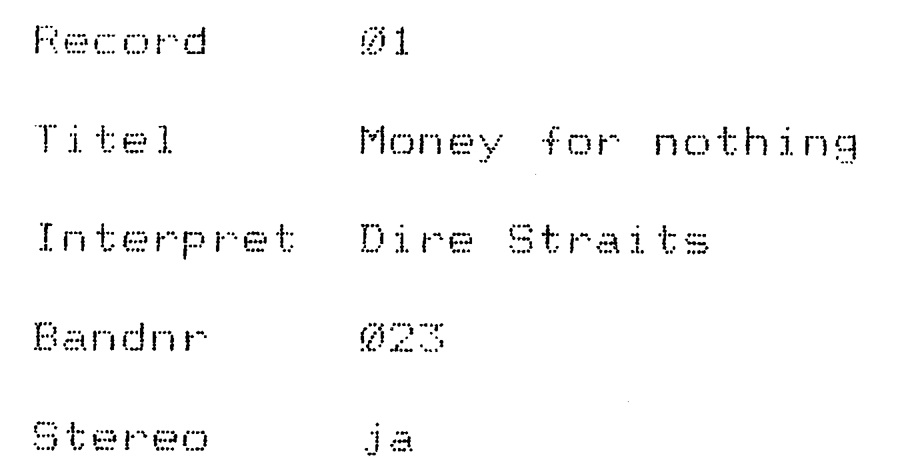
Was ist ein relationales Datenbanksystem?
Unter Relation versteht man eine Menge von Paaren oder Tupeln (drei oder mehr) aus gleichartigen Elementen, zwischen denen eine bestimmte Beziehung besteht.
In einer relationalen Datenbank sind diese Elemente die Datensätze. Im Bild 3 ist eine solche Relation dargestellt. Zwischen den Elementen »Uptown girl«, »Billy Joel«, »014« und »ja« - dem Inhalt des Datensatzes 3 - besteht beispielsweise eine (von vielen möglichen!) Beziehung: sie sind in demselben Datensatz enthalten.
In einer relationalen Datenbank werden die Daten als eine Folge von zweidimensionalen Tabellen gespeichert, in denen die Tabellenzeilen den einzelnen Sätzen der Datenbank und die Spalten den Feldern entsprechen. Auf diese Weise leistet ein relationales Datenbanksystem die Strukturierung der Daten, die bei anderen Formen der Dateiverwaltung vom Benutzer organisiert werden muß.
Das Strukturkonzept, das einer relationalen Datenbank zugrunde liegt, ist sehr einfach und erlaubt aufgrund dessen schnelles Definieren, Benutzen und Ändern der Datenstrukturen. Die dBase II Befehle, die dies leisten, heißen »CREATE«, »USE« und »MODIFY STRUCTURE«. Sie werden weiter unten genau beschrieben. Darüber hinaus bietet dieses Strukturkonzept die flexibelste Art, Daten zu speichern und zu verwalten. Jedes Element kann mit jedem anderen verbunden werden, ohne daß die Beziehung vorher definiert werden mußte. Diese Verknüpfungen werden in unserem Datenbanksystem realisiert durch die drei logischen »und«, »oder« und »nicht«, die in dBase II folgendermaßen heißen: ».AND.«, ».OR.« und ».NOT.«. In der Beschreibung der Befehle »LIST« und »DISPLAY« wird darauf näher eingegangen.
Anwendungsmöglichkeiten für dBase II
Die Anwendungsbereiche von dBase II sind sehr weitgefächert. Sie reichen von klassischen Anwendungen wie Adreß- und Rechnungsverwaltung und dem Aufbau von Ausdruckformularen über die Organisation eines Bibliothekskatalogs, in dem Datenmengen verschiedener Größe im ständigen Zugriff gehalten und verändert werden müssen, bis zum Datenaustausch mit Textverarbeitungsprogrammen wie WordStar (Bild 6) und Tabellen-Kalkulationsprogrammen wie zum Beispiel Multiplan (Bild 7 und 8).
Im folgenden Abschnitt wird veranschaulicht, wie mit Hilfe von dBase II Daten verwaltet werden.
Über die vielfachen Einsatzmöglichkeiten hinaus kann dBase II so mit Serviceprogrammen ausgestattet werden, daß Benutzer damit arbeiten können, ohne die Dialogsprache von dBase II zu kennen (Bild 9). Die integrierte Programmiersprache des Datenbanksystems enthält Befehle, mit deren Hilfe Bildschirmmasken schnell und problemlos erstellt werden können. Durch solche Masken kann das Arbeiten mit einem Datenbanksystem für computerungeübte
.DF test3.TXT
.RV name, vorname, strasse, ort, betrag
Herrn &vorname& &name& 23.August 1983 &strasse& &ort&
Sehr geehrter Herr &name&, wie wir leider feststellen mußten, ist unsere letzte Rechnung über DM &betrag&
.
offenbar noch nicht beglichen.......
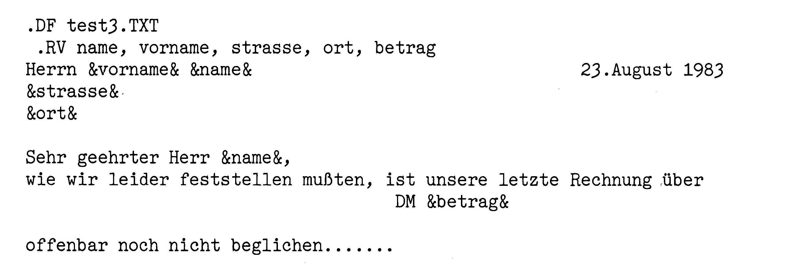
1 2 3 4 5 6 7
1 Budget Blatt 1
2
3 in 1000 DM
4
5 Januar Februar März April Mai Juni
7 Gehälter 72 74 73 75 76 74
8 Pers.Nebenk. 21 23 24 25 24 25
9 Betriebsmittel 10 4 8 6 9 8 10 Dienstleist. 20 24 31 26 22 25 11 Abschreibungen 15 15 15 15 16 17 12 Sonst.Kosten 5 2 6 9 1 10 13
14 Summe 143 142 157 156 148 159
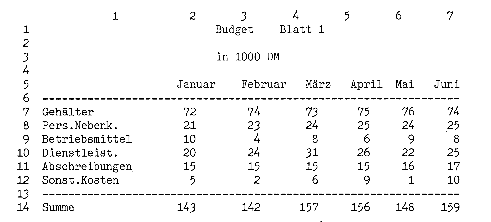
00001 Gehälter 72 74 73 75 76 74 00002 Pers.Nebenk. 21 23 24 25 24 25 00003 Betriebsmit. 10 4 8 6 9 8 00004 Dienstleist. 20 24 31 26 22 25 00005 Abschreib. 15 15 15 15 16 17 00006 Sonst. Kost. 5 2 6 9 1 10
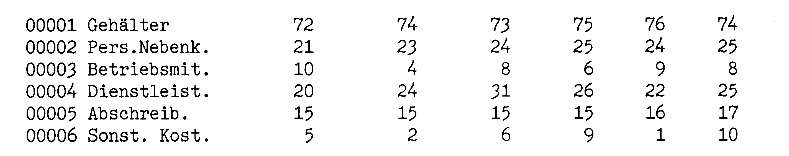
Programm-Auswahl
(1) Informationen über einzelne Kunden
(2) Kundenadressen auflisten
(3) neue Kunden aufnehmen
(4) Rechnungs-Bearbeitung
(0) ENDE
Bitte wählen Sie eine Funktion
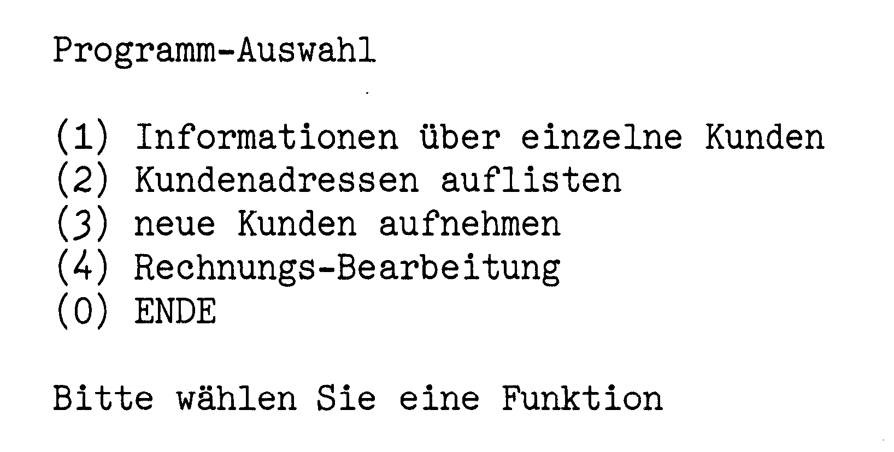
Benutzer wesentlich vereinfacht werden. Bild 9 zeigt das Beispiel einer solchen Bildschirmmaske. Der Benutzer kann eine der angegebenen Funktionen wählen. Die Eingabe »0« beendet das Programm. Wählt man die Funktion »1«, so werden Informationen über Kunden aufgelistet. Wie das Programm aussieht, das diese Maske erzeugt, zeigt Bild 15. Durch den dBase-Befehl »SAY« wird der Text an den angegebenen Positionen auf dem Bildschirm gedruckt. Die Positionsangabe »1,30« bedeutet: in der 1. Zeile auf der 30. Stelle auf dem Bildschirm beginnt der Text. In der CASE-Schleife wird die Antwort des Benutzers eingelesen und ausgewertet. Wie man sieht, führt das dBase-Programm je nach Eingabe (»1«, »2«, »3«, »4« oder »0«) verschiedene Aktionen aus. Auf die Eingabe »1« hin wird ein Unterprogramm namens »info2« aufgerufen, das Informationen über einzelne Kunden liefert. Das Programm »info2« ist nicht abgebildet. Auf die Eingabe »0« hin wird durch Ausführen des Befehls »RETURN« das Programm beendet.
Das Arbeiten mit dBase II
Bevor dBase II auf dem C 128 aufgerufen werden kann, wird über das mitgelieferte Hilfsprogramm SETUP der Zeichensatz festgelegt, mit dem dBase zukünftig arbeiten soll. Der Commodore 128 bietet den internationalen ASCII-Zeichensatz mit Sonderzeichen, wie eckige und geschweifte Klammern, und den deutschen DIN-Zeichensatz mit Umlauten, »ß« und dem »%«-Zeichen.
Da die deutschen Umlaute in den Datenbeständen häufig auftauchen, sollte auf die Systemfrage GERMAN (G) OR ASCII (A) KEYBOARD hin der deutsche Zeichensatz gewählt werden. Damit taucht das erste Problem auf: Commodore-Drucker kennen keine deutschen Umlaute. Besser geeignet sind Epson-Drucker und Epson-kompatible Drucker wie Star SG10/SD10/SR10, Ritemann II, Citizen MSP10-MSP20. Ritemann C+/F+ oder Seikosha SP 1000/SP1300. Diese Drucker verfügen über den deutschen Zeichensatz.
. create video-clip
Satzstruktur folgendermaßen eingeben
Feld Name, Typ, Länge, Dezimalstellen 001 titel,c,25,0 002 interpret,c,12,0
003 bandnr,n,3,0
004 stereo,1,1,0
005
Daten jetzt eingeben? N
. use video-clip
. modify structure
Nun soll an ganz einfachen Beispielen gezeigt werden, wie Befehle in dBase II aussehen, wie sie funktionieren und welche Probleme in einem Datenbanksystem wie gelöst werden können. Damit soll denjenigen, die dBase II noch nicht kennen, ein Gefühl dafür vermittelt werden.
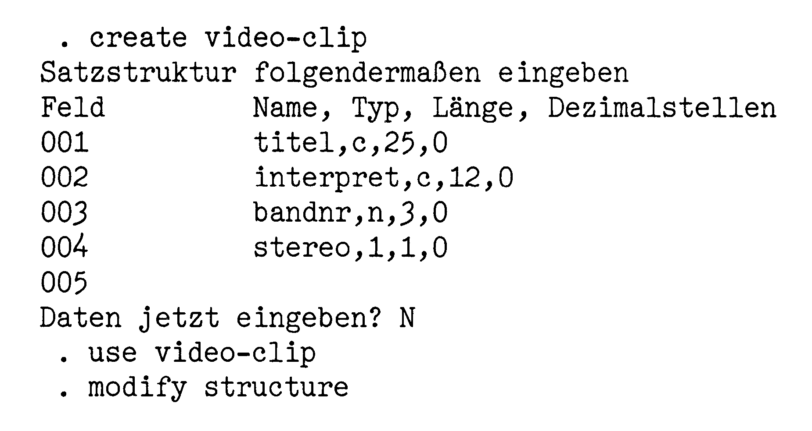
dBase II wird aufgerufen durch den Befehl:
DBASE.
Das Datenbanksystem meldet sich mit dem Prompt-Punkt, einem einzelnen Punkt in einer Zeile. Damit zeigt das System an, daß Befehle eingegeben werden können. Verlassen wird dBase II durch den Befehl
QUIT.
Erstellen einer Datei und Dateneingabe.
Legen wir nun eine neue Datei an und nennen sie video__clip:
CREATE »video__clip«
In Bild 10 wird gelistet, wie das System die Satzstruktur abfragt. Die Felder werden automatisch durchnumeriert. Jedes Feld wird vom Benutzer mit einem Namen belegt. In unserem Beispiel soll das erste Feld den Titel enthalten. Deshalb wird es auch »titel« genannt. Da der Titel ein Text ist, muß das Feld vom Typ Zeichenkette sein. Für das System wird der Feldtyp Zeichenkette durch ein »c« kodiert (»c« steht für character). Als Feldlänge nehmen wir 25 Stellen an, weil die Titel wahrscheinlich nicht länger sind. Und die Anzahl der Dezimalstellen ist beim Feldtyp Zeichenkette natürlich »0«. Das nächste Feld heißt »interpret«. Die Angaben werden ebenso wie beim ersten Feld durch Komma getrennt eingegeben. Das dritte Feld soll die Bandnummer, das heißt also Zahlen, enthalten. Das Feld wird »bandnr« genannt. Der Feldtyp eines Zahlenfeldes (numerisches Feld) wird als »n« kodiert. Da es wahrscheinlich nicht mehr als 999 Bänder gibt, reicht uns die Feldlänge »3«. Dezimalstellen werden nicht benötigt. Das letzte Feld »stereo« soll nur ja oder nein enthalten. Daher hat es den Feldtyp »l«, das heißt »logisches Feld«. Ist die Eingabe der Satzstruktur beendet, so fragt das System »Daten jetzt eingeben?«. Gibt man darauf ein »y« (ja) als Antwort ein, so können die Daten direkt eingegeben werden.
Beendet werden kann die Eingabe wieder mit dem Befehl CTRL w. Wenn wir die Eingabe der ersten Sätze nun auf Schreibfehler überprüfen wollen, kann durch
EDIT 1 der erste Satz wieder auf den Schirm geholt und gegebenenfalls korrigiert werden.
Beendet wird das Editieren wieder durch das Kommando
CTRL w.
Sollen in eine schon existierende Datei Daten eingegeben werden, so muß der Name der Datei zuvor dem System bekanntgegeben werden. Dies geschieht mit USE video__clip
Damit wurde die Datei video_ clip dem System nun als die aktuelle Datei gemeldet. Auf ihr kann man nun alle möglichen Operationen durchführen. Auch in der Vereinbarung der Dateistruktur können Änderungen und Erweiterungen vorgenommen werden. Mit dem Kommando
MODIFY STRUCTURE kann die Dateistruktur editiert und verändert werden, um zum Beispiel die Titellänge zu erhöhen oder um ein weiteres Feld hinzuzufügen. Die bisher eingegebenen Daten gehen bei Ausführung dieses Kommandos allerdings verloren. Daher muß man die Daten zuvor in eine zweite Datei kopieren (mit dem Befehl COPY), von der man sie später in die geänderte Ursprungsdatei zurückschreiben kann. Mit dem Kommando
CTRL w wird der MODIFY-Modus wieder verlassen. Um nun Daten einzugeben, benötigt man das Kommando APPEND
Es liefert einen leeren Datensatz auf den Schirm und erwartet die Eingabe eines Datensatzes. Wenn dieser beschrieben ist, blättert das System weiter und liefert den nächsten leeren Datensatz.
Wir haben bisher eine neue Datei angelegt (mit »CREATE«) und unsere Daten eingegeben (durch »APPEND«). Nun kann man auflisten lassen, welche Informationen bisher eingegeben wurden: LIST STRUCTURE listet die Dateistruktur (Bild 11),
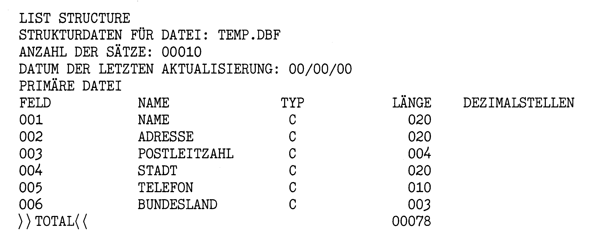
LIST listet den Dateiinhalt komplett (Bild 12),
LIST titel,interpret listet nur die eingegebenen Titel und Interpreten.
Über die drei logischen Grundfunktionen
.and. (und, das heißt: sowohl ... als auch),
.or. (oder, das heißt entweder... oder) und
.not. (nicht) können verknüpfte Suchbedingungen erzeugt werden. Damit können ganz bestimmte Daten gesucht und gelistet werden.
Werden zum Beispiel in einer Kundendatei alle Personen namens Meier gesucht, formuliert man die entsprechende Bedingung so: LIST FOR name = 'Meier'
Ist man sich über die Schreibweise des Namens nicht ganz sicher, so gibt man zwei Schreibweisen an und verbindet sie mit »oder«.
Das sieht dann so aus: LIST FOR name = 'Meier'.OR. name = 'Meyer'
Will man nur die Mitarbeiter namens 'Meier'in München aufgelistet haben, so fragt man zusätzlich nach der Postleitzahl »8000« im Feld »plz« und fragt so ab: FOR name = 'Meier'.AND. plz = '8000'
Ein Beispiel für eine »NOT«-Abfrage findet sich unter der Beschreibung der »WHILE«-Schleife.
Die nächsten Kommandos arbeiten auf größeren Datenmengen. Da unsere Mini-Datei bisher nur drei Sätze enthält, wird nun an einer größeren Datei, die in Bild 12 gelistet ist, weitergearbeitet. Durch das Kommando LIST werden alle Feldinhalte, die einer angegebenen Bedingung genügen, gelistet. Will man sich satzweise den jeweils nächsten Datensatz anzeigen lassen, der die Bedingung erfüllt, verwendet man den folgenden Befehl: DISPLAY FOR postltzahl = '8' listet den nächsten Datensatz, in dem die Postleitzahl mit '8' beginnt, hier also den ersten.
Den nächsten Datensatz, der die Suchbedingung erfüllt, findet man durch Eingabe des Befehls CONTINUE
Durch Abwechseln der Befehle DISPLAY und CONTINUE kann man in Einzelschritten das gleiche erreichen wie oben mit dem Befehl LIST. Diese schrittweise Ausführung wird im Rahmen von Programmen interessant.
Zur gleichzeitigen Bearbeitung mehrerer Datensätze dient der Befehl BROWSE
Mit diesem Befehl können zwanzig aufeinanderfolgende Datensätze gleichzeitig auf den Schirm geholt und bearbeitet werden. Die Datensätze der gesamten Datei können durch Cursorbewegung erreicht und so bearbeitet werden.
Beim Aufbau einer Datenbank müssen naturgemäß viele Informationen erstmals über die Tastatur in das System eingegeben werden. Dies ist zeitlich aufwendig und bietet viele Fehlermöglichkeiten. Daher sollten möglichst viele bereits vorhandene Informationen für die Einrichtung neuer Dateien genutzt werden. Umfassende Möglichkeiten dafür sind ein wesentliches Merkmal guter Datenbanken.
Durch den Befehl
APPEND FROM <dateiname> können ausgewählte Informationen aus der aktuellen Datei in eine neue Datei übernommen werden. (Die genaue Syntax der dazu notwendigen Befehlsfolge findet sich in jedem dBase II-Handbuch - siehe Literaturliste am Ende des Artikels.)
Ein Befehl, der typische Eigenschaften einer relationalen Datenbank realisiert, ist die Anweisung REPLACE <Feldname> WITH
< Ausdruck>
Ein beliebiger Datensatz ist im Zugriff. In diesem Datensatz wird nun der Inhalt des Datenfeldes <Feldname> ersetzt durch einen Text, eine Zahl, den Inhalt eines anderen Feldes oder das Ergebnis einer Berechnung - je nach dem <Ausdruck>.
Hätten wir beispielsweise in der aktuellen Datei ein Feld namens »datum«, so würde durch den folgenden Befehl in allen Sätzen der Datei der Inhalt dieses Feldes geändert.
REPLACE ALL datum WITH Date() In einem Systemspeicher
Date() steht das aktuelle Datum, das beim Start von dBase II angege-
00001 Adams, Peter Bergstrasse 15 8000 München 2 14 12 53 BAY 00002 Camphausen,E. Müllerstr. 7 1000 Berlin 2 84 00 33 BLN
00003 Dirschedel,F. Magnolienweg 20 8000 München 90 97 81 13 BAY 00004 Dollinger,E. Hanfstr.43 7432 Unterdorf 12 45 B-W 00005 Eberhart, T. Marktstr.19 5013 Ebenhausen 34 56 23 NRW 00006 Faltmann, G. Däumlingsweg 6 8049 Dirnbach 13 29 8 BAY 00007 Gruber,Otto Mozartstr.29 7080 Pfaffenh. 46 28 B-W 00008 Haberer,Karl Teufelsweg 13 8047 Schrobenh. 12 45 7 BAY 00009 Imhof,Bernh. Gärtnerstr.9 4703 Marktdorf 123 NRW 00010 Jahn, Alois Hühnersteig 3 6142 Oberhof 456 BAY
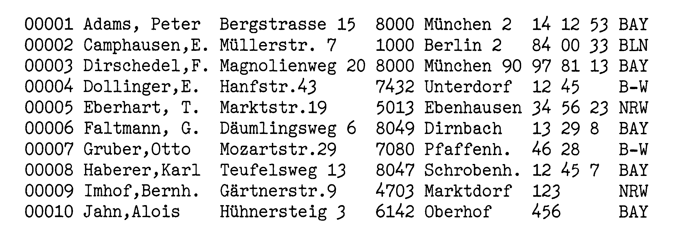
@ 1,30 SAY ' Kunden-Information '
@ 5,5 SAY TRIM (vorname) + ' ' + name @ 5,50 SAY ' kunden-Nr. ' ' + kunummer @ 7,5 SAY strasse
@ 8,5 SAY ort
@ 12,5 SAY ' Letzte Rechnung vom: ' ' + datum @ 15,5 SAY ' bisheriger Umsatz: DM '
@ 17,5 SAY ' offene Posten: DM '
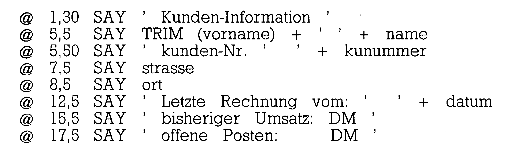
.
Kunden-Information
Werner Meister Kunden-Nr.098 Marktplatz 3
8057 Eching
Letzte Rechnung vom:
bisheriger Umsatz: DM Offene Posten: DM
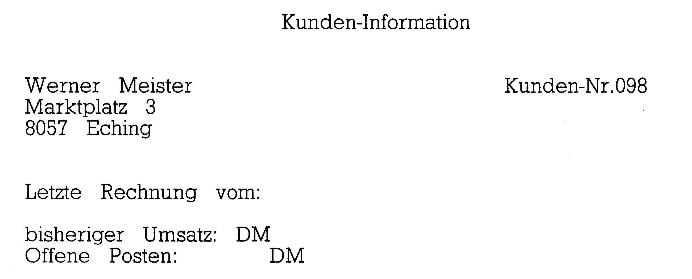
@ 1,30 SAY 'Programm-Auswahl'
@ 5,15 SAY '(1) Informationen über einzelne Kunden' @ 7,15 SAY '(2) Kundenadressen auflisten'
@ 9,15 SAY '(3) neue Kunden aufnehmen'
@ 11,15 SAY '(4) Rechnungs-Bearbeitung'
@ 13,15 SAY '(0) ENDE'
@ 19,15 SAY 'Bitte wählen Sie eine Funktion' WAIT TO antwort
DO CASE CASE antwort = '1'
DO info2
CASE antwort = '2'
USE adressen INDEX alphabet
ERASE
@1,1 SAY 'Kunde Strasse Wohnort Kunden-Nr.'
DISPLAY OFF ALL $(vorname,1,1)+'.', name,strasse,ort,kunummer;
CASE antwort = '3'
USE adressen INDEX alphabet
APPEND
CASE antwort = '4'
?
CASE antwort = '0'
RETURN
ENDCASE
ENDDO ben wurde. Der Inhalt des Feldes
»datum« wird durch die Ausführung des REPLACE-Befehls durch dieses Tagesdatum ersetzt.
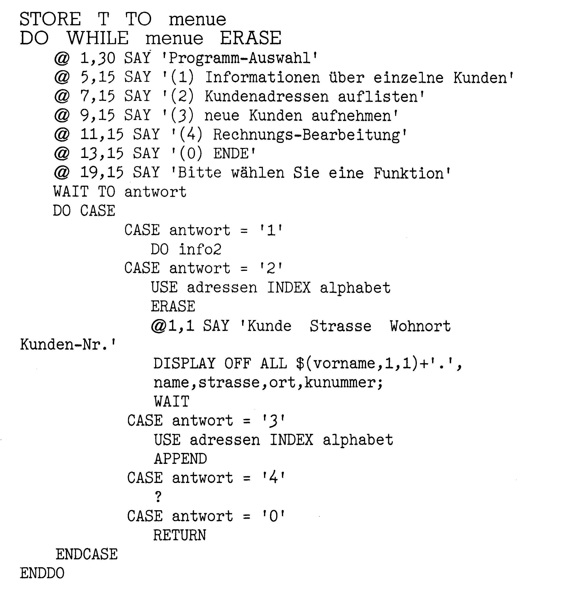
Eine solche Manipulation einer kompletten Datei oder Teilen einer Datei mit einem einzigen Befehl (hier durch REPLACE ALL) ist nur bei relationalen Datenbanken möglich.
dBase II bietet über die hier gezeigten Befehle hinaus wesentlich mehr Möglichkeiten zur Dateneingabe, -manipulation und zur -auswahl. Alles aufzuzeigen, was in diesem Datenbank-System möglich ist, würde den Rahmen dieser Einführung sprengen. Es gibt mehrere empfehlenswerte Bücher über dBase II, in denen das System in seinem vollen Umfang beschrieben wird (siehe Ende des Artikels).
Sortieren, Suchen, Indizieren
Eine der wichtigsten Aufgaben einer Datenbank ist die sortierte Ausgabe. Sortiert wird eine Datei durch Ausführung des Befehls: SORT ON <Feldname> TO
<Zieldatei>
Der Sortierbegriff, nach dem sortiert wird, ist <Feldname>.
Das soll nun konkret gemacht werden. Nimmt man wieder die Datei von Bild 12, so kann man diese nach verschiedenen Kriterien sortieren. Durch:
SORT ON name TO test werden die Datensätze in alphabetischer Reihenfolge geordnet und in die neue Datei »test« geschrieben.
Das Sortieren einer Datei ist bei einer relationalen Datenbank von nicht sehr großer Bedeutung. Die meisten Befehle benötigen keine sortierten Dateien für ihre Ausführung.
Weitaus wichtiger ist die Indizierung von Dateien in dBase II. Wenn man sehr große Dateien sortiert, ist das eine sehr zeitaufwendige Sache. Arbeitet man mit indizierten Dateien, so wird ein neuer Datensatz schon während der Eingabe einsortiert. Mit der Möglichkeit, auf indizierten Dateien zu arbeiten, kann das Sortieren ganz erheblich beschleunigt werden. Oder wenn nach Sätzen gesucht werden soll und dafür zwei oder mehr Kriterien in Frage kommen, wird dieser Vorgang durch Verwendung einer indizierten Datei wesentlich schneller.
Die Indexdatei ist eine Datei, die nach einem oder mehreren Schlüsseln sortiert ist. Sie enthält pro Satz nur noch die im Indexbefehl angegebenen Felder. Dieser sogenannte Zeiger (Pointer) verweist auf den zugehörigen Satz in der Stammdatei. Damit steht für eine Bearbeitung der vollständige Inhalt der Ursprungsdatei zur Verfügung. Eine aktuelle Datei wird indiziert durch:
INDEX ON <Feldname> TO <Indexdatei>
Die so erzeugte Indexdatei wird unter dem Namen <Indexdatei> abgelegt. »Feldname« kann hier auch eine Aufzählung von Feldern sein. Dieser erweiterte Index-Befehl könnte für das Beispiel in Bild 12 dann so aussehen: INDEX ON name, vorname, postltzahl TO bspdatei
Die Datei namens »bspdatei« wäre nach Befehlsausführung nach drei Schlüsseln sortiert (nämlich »name«, »vorname« und »postltzahl«).
Für sehr schnelle Suchvorgänge in Indexdateien ist der Befehl FIND <Suchbegriff> geeignet, der vor allem für große Dateien nützlich ist. Da pro Datensatz nur das indizierte Feld abgefragt wird, ist die Suche mit FIND außerordentlich schnell. Voraussetzung für eine solche Suche ist natürlich, daß die Indexdatei nach dem Suchbegriff indiziert ist.
Programmieren mit dBase II
Durch den interaktiven Frage-Befehl (interaktiv nennt man die Beziehungen zwischen Mensch und Computer, das heißt, der Mensch fragt und der Computer antwortet direkt)
? <Ausdruck> kann ein Feldinhalt ausgegeben oder gedruckt werden. Darüber hinaus kann man mit dem Kommando
? <mathematische Formel> in dBase auch rechnen. »?« entspricht in Basic dem PRINT-Befehl.
Für eine präzise Positionierung von Texten und Daten ist das Kommando
@ <Zeile>,<Pos.> SAY <Ausdruck> gedacht.
Das Zeichen »@« wird auch AT Zeichen oder Klammeraffe genannt. Der Klammeraffen-Befehl entspricht in Basic dem PRINTAT-Befehl. Er erfüllt eine sehr wichtige Funktion beim Formatieren und Beschreiben von Druckformularen. Ebenso wichtig ist er beim Aufbau von Bildschirmmasken. Diese Masken wurden schon anhand von Bild 9 beschrieben. Im Bild 13 sieht man ein Programm-Listing, das die Positionierungsbefehle der Bildschirmmaske (Bild 14) enthält. Nur ganz kurz zur Bedeutung einzelner Befehle: Der Klammeraffen-Befehl in der ersten Zeile besagt »drucke in der ersten Zeile an der 30. Stelle den Text 'Programm-Auswahl'«.
In der 5. Zeile an der 5. Stelle beginnt der Vorname (»TRIM« = ohne Leerstellen). Direkt dahinter (+ = verknüpfe mehrere Zeichenketten) wird ein Leerzeichen ('') und dann der Nachname gedruckt.
Die Bildschirmmaske in Bild 14 wird durch dieses Programm aufgebaut. Man sieht: Vorname und Nachname stehen - durch ein Leerzeichen getrennt - in der 5. Zeile an der richtigen Stelle. Hinter den Angaben »bisheriger Umsatz« und »offene Posten« sind Bildschirmfelder vorgesehen, die hier leider nicht sichtbar werden. Hinter »DM« kann der jeweilige Betrag einfach eingegeben werden.
In dBase II sind vier grundlegende Programmstrukturen verfügbar:
-eine Abfolge von Befehlen -eine Auswahl von Entscheidungen - Wiederholung (Schleifen) - Prozeduren (Unterprogramme)
Alle Kommandos und Befehle können direkt eingegeben und schrittweise ausgeführt werden. Wenn der Anwender anstelle von Direktbefehlen über Befehlsfolgen in Programmform verfügen will, stellt dBase dafür Kommandos zur Verfügung. Um ein Programm zu schreiben, das immer wieder ausgeführt werden kann, wird zuerst durch das Kommando MODIFY COMMAND <Programm-Name> eine Datei angelegt, die das Listing des Programms enthalten soll. Das in die neue Kommandodatei eingegebene Programm wird aufgerufen mit
DO <Programm-Name>
Mit dem MODIFY-Kommando, das eine Programmdatei anlegt, kann eine bereits bestehende Kommandodatei wieder editiert, geändert und erweitert werden. Beispiele:
- »WHILE«-Schleife
Will man einen wiederholten Zugriff auf Daten realisieren, so verwendet man Programmschleifen, die beliebig oft durchlaufen werden können.
Das folgende Mini-Beispielprogramm bearbeitet eine Datei Satz für Satz, bis das Dateiende erreicht ist. DO WHILE .NOT. EOF
<Befehlsfolge>
SKIP
ENDDO
Durch den Befehl SKIP (=springen) wird der jeweils folgende Datensatz aufgerufen. Das Prädikat »EOF« (=END OF FILE = Dateiende) prüft, ob das Dateiende der geöffneten Datei schon erreicht ist. Wenn ja, dann liefert EOF den logischen Wert »T«(= wahr), sonst »F« (= falsch). Die obige »WHILE«-Schleife wird durchlaufen, solange der Wert von »EOF« nicht wahr ist. Das heißt, solange das Dateiende noch nicht erreicht ist, kann die Datei weiter bearbeitet werden.
-»CASE« - mehrfache Alternativen
In Bild 15 wird gezeigt, wie auf Benutzereingaben fallweise unterschiedlich reagiert werden kann. Wie das funktioniert, wurde im Abschnitt »Anwendungsmöglichkeiten für dBase II« schon beschrieben.
Mit Hilfe der »IF«-Auswahl kann zwischen zwei Möglichkeiten unterschieden werden. Das kleine Beispiel zeigt folgendes: Wenn das Dateiende - das heißt »EOF« = T erreicht ist, wird eine entsprechende Meldung gedruckt. Im »ELSE« Teil weiß man, daß noch unbearbeitete Sätze der Datei vorliegen, es wird eine beliebige Befehlsfolge ausgeführt, die die Daten verarbeitet.
IF EOF
@ 5,5 SAY "Datei-Ende erreicht"
ELSE
<bearbeite den nächsten
Datensatz>
ENDIF
Die &-Makrofunktion:
Die wiederholte Eingabe von Zeichenketten läßt sich in dBase II einfach vermeiden, indem man sie einmal einer Variablen zuweist. Nennen wir diese Variable »T«. Diese Variable tritt im Programm dann mit ihrem Namen stellvertretend (als Makro) für die Zeichenkette auf. Erst wenn die Zeichenkette benötigt wird, erfolgt eine Ersetzung. Ersetzt wird der Name der Variablen, der nun mit dem Zeichen »&« beginnt. Er heißt nun »&T«. Dieser Ersetzungsvorgang wird automatisch durch das Programm durchgeführt. In Bild 6 sieht man, wie solche Variablen sinnvoll eingesetzt werden können.
Beispiel:
.STORE "DELETE RECORD" TO T DELETE RECORD
.&T 5
Die Variable T wird im ersten Kommando auf den Wert
»DELETE RECORD«
gesetzt. dBase II meldet sich daraufhin und listet den gespeicherten Text noch einmal.
In der dritten Zeile wird dann der Variablenname »&T« vom Programm durch den Text »DELETE RECORD« ersetzt. Nun wird aus dem Variablenwert und der Zahl 5 der Befehl DELETE RECORD 5 zusammengesetzt und kann ausgeführt werden.
Mit dieser Makrofunktion lassen sich auch Parameterwerte zwischen Kommando-Dateien austauschen, wenn diese sich gegenseitig aufrufen.
Anmerkungen zur Peripherie
Floppies:
Bei der Anwendung von dBase II bekommt man, wie generell bei CP/M-Software auf dem C 128, Platzprobleme, wenn man mit der Floppy 1541 arbeitet. Die Floppy ist nicht nur um den Faktor 10 langsamer als die 1571/70, was sich beim Arbeiten mit dBase II ganz besonders bemerkbar macht. Ernste Speicherplatzprobleme gibt es, wenn man nur ein einziges Laufwerk besitzt. CP/M und dBase II belegen zusammen soviel Platz, daß kein Raum mehr da ist, um Dateien anzulegen. Auch ein Diskettenwechsel ist ausgeschlossen, da das Betriebssystem CP/M immer wieder Programme nachlädt. Aber auch mit den Floppies 1571/70 kann man optimal nur mit zwei Laufwerken arbeiten. Von den 340 kByte, die man auf einer 1571 zur Verfügung hat, sind etwa 200 kByte für die Daten frei ( CP/M belegt 59 kByte, die dBase-Programm-Files 124 kByte). Zum Vergleich: Eine dBase II-Datei mit 28 Sätzen mit jeweils insgesamt 150 Zeichen belegt schon 6 kByte.
Drucker:
Das Programm »SETUP« wird ausgeführt, bevor dBase II gestartet wird. Mit »SETUP« kann zwischen DIN- oder ASCII-Tastatur gewählt werden. Angeschlossen werden können serielle Drucker, parallele Centronics-Drucker über den User-Port und Centronics-Drucker mit VC-Interface, die über den seriellen Bus betrieben werden. Über den seriellen Bus können auch die Commodore-Drucker angeschlossen werden. Da Commodore-Drucker nicht über den deutschen Zeichensatz verfügen, sind sie zum Arbeiten mit der vorliegenden deutschen Version von dBase II nur dann zu empfehlen, wenn man auf Umlaute verzichten kann. Keine Probleme machen dagegen parallele Drucker mit oder ohne VC-Interface.
Fazit:
Wenn man über die geeignete Peripherie verfügt, ist dBase II das beste Datenbanksystem, das zur Zeit für PCs verfügbar ist. Bevor man dBase II einsetzt, muß auf jeden Fall die Platzfrage geklärt sein! Ohne genug Diskettenplatz für die Daten kann dBase II nicht sinnvoll eingesetzt werden. Das Sortieren in dBase II ist schon für kleine Dateien sehr langsam. Dieser Nachteil wird relativ gut ausgeglichen, wenn man mit indizierten Dateien arbeitet.
Die Beispiele stammen zum Teil aus der Einführung von Dr. Peter Albrecht, dBase II für den Commodore 128 PC. Die Tabelle 1 ist entnommen aus dem Handbuch zum Programm.
- maximal 65535 Sätze pro Datei-File,
- maximal 1000 Zeichen pro Satz,
- maximal 32 Felder pro Satz,
- maximal 254 temporäre Variablen,
- größte darstellbare Zahl:
etwa +1,8 x 10 hoch 63, - kleinste darstellbare Zahl:
etwa +1 x 10 hoch -63, - Rechengenauigkeit: 10 Stellen,
- maximal 254 Zeichen pro Zeichenkette,
- maximal 254 Zeichen pro Befehlszeile,
- maximal 99 Zeichen Index-Schlüssel-Länge,
- maximal 5 Ausdrucke in einem SUM-Befehl.
- Notwendiges System: C 128
- Floppy: 1571/70, besser mit 2 Laufwerken
- Preis: 199 Mark
Literatur:
Dr. Peter Albrecht, dBase II für den Commodore 128 PC, Markt&Technik Verlag 1985, ISBN 3-89090-189-1, 49 Mark
Dr. Peter Albrecht, Das Datenbanksystem dBase II, Markt&Technik Verlag 1985, ISBN 3-89090-143-3, 291 Seiten, 68 Mark
Wayne Ratliff, dBase II Anwender-Handbuch, Ashton-Tate GmbH, Markt&Technik Software-Verlag 1984, 437 Seiten, 49 Mark